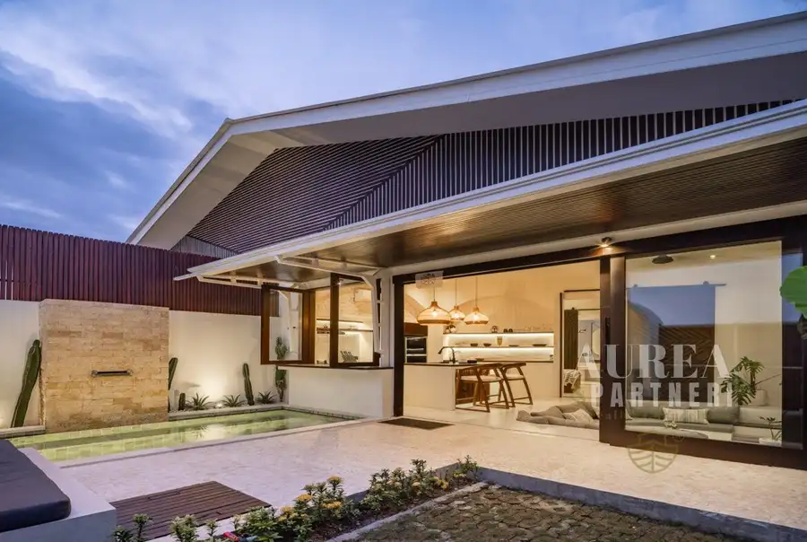
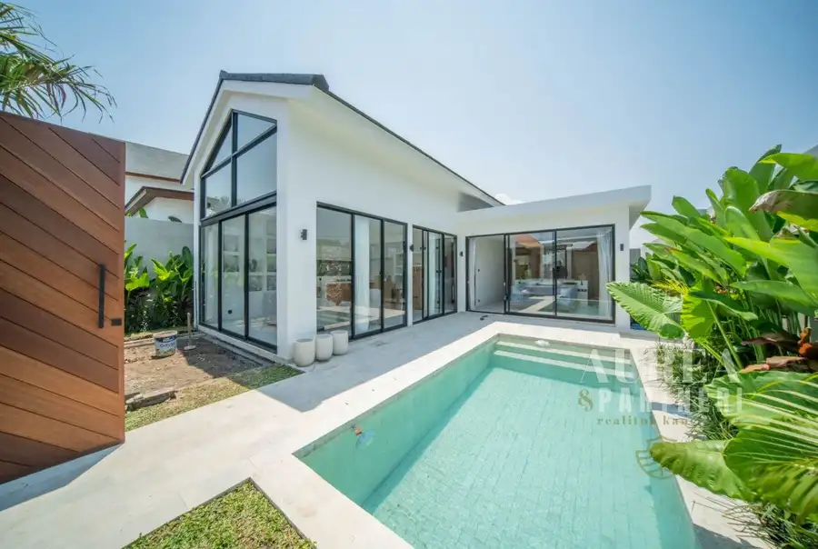
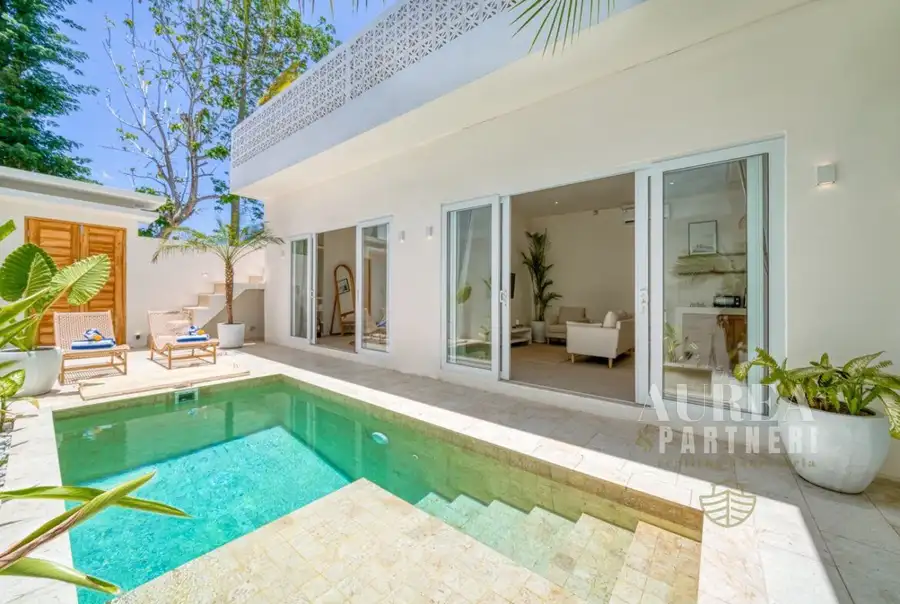
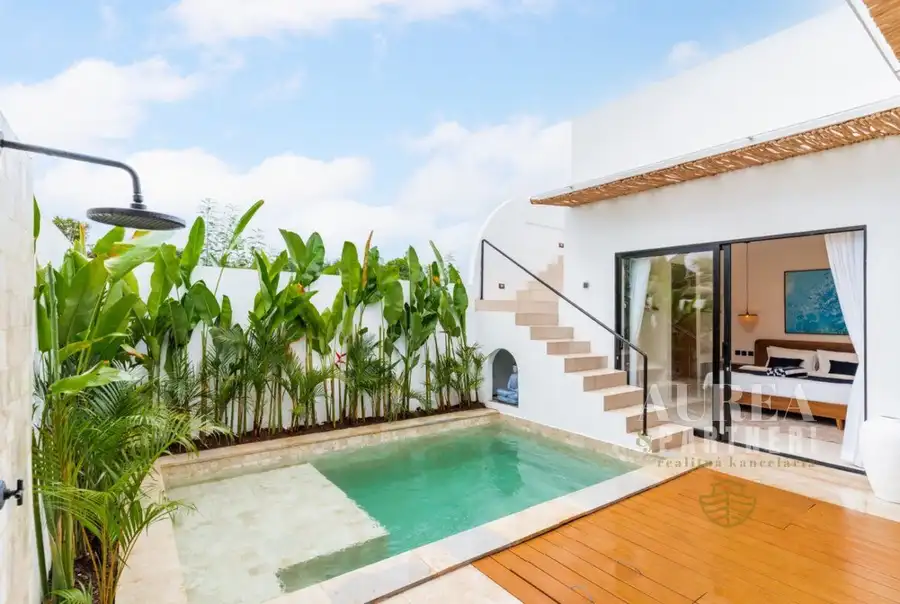
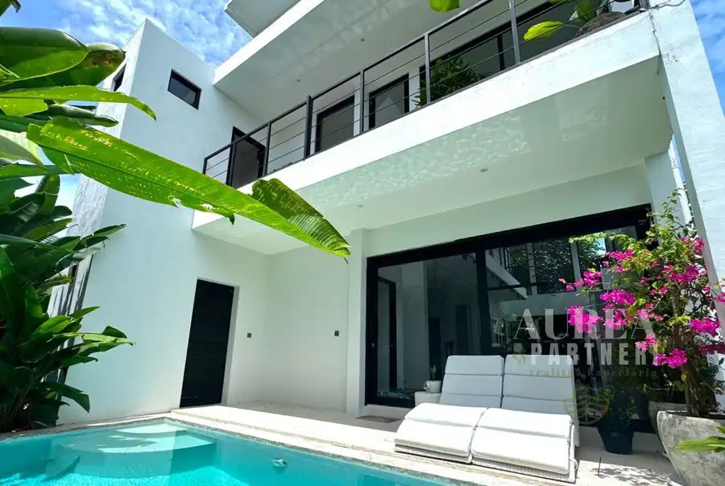
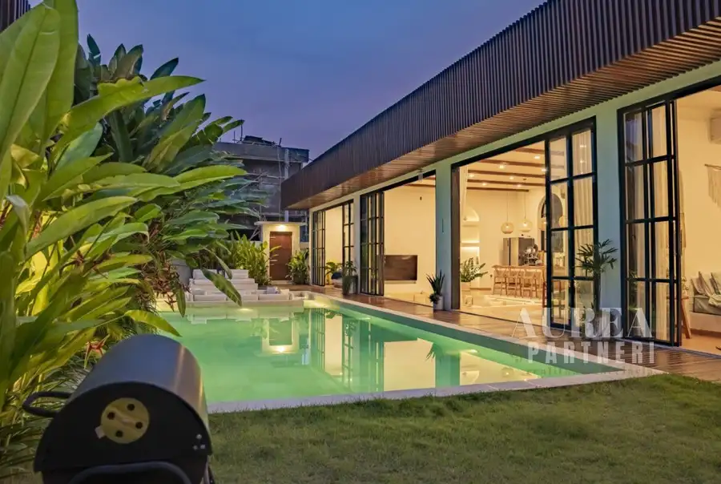
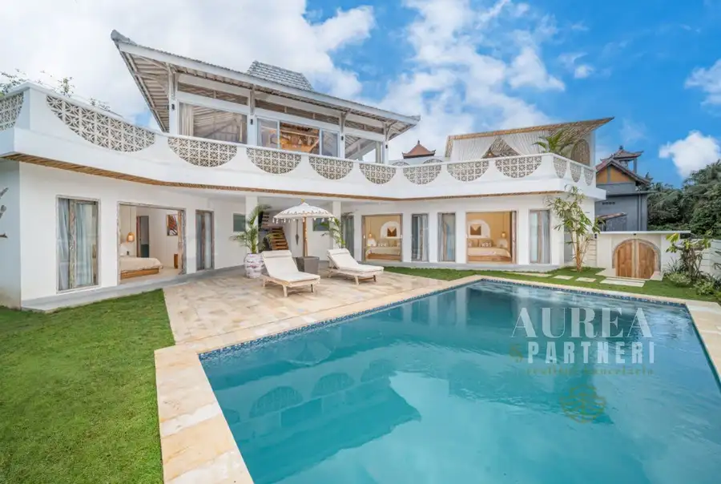
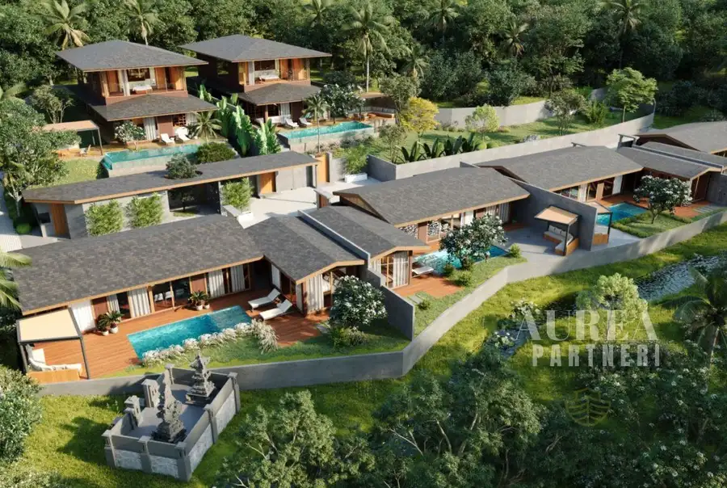
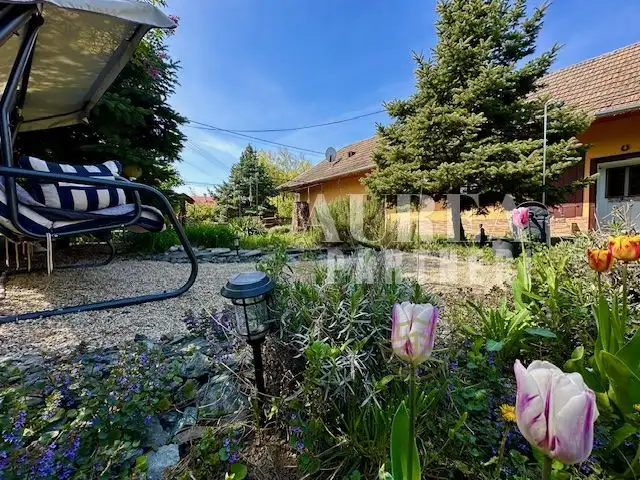
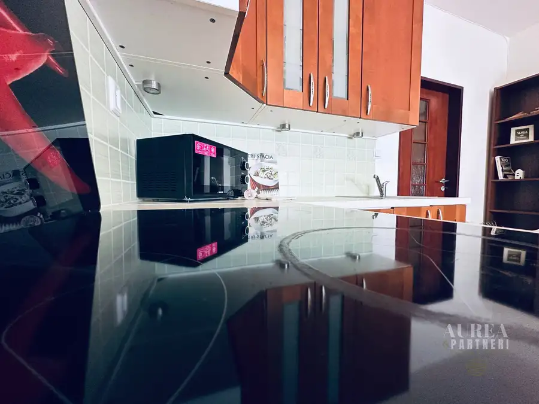

Aktuálna ponuka
Nehnuteľnosti, ktoré ponúkam
10 nehnuteľností na predaj a prenájom. Vyberte typ, alebo napíšte lokalitu.
10 z 10 ponúk

Domy a budovy10 186 000 €PREDAJ Investičná 2kk VILA s prémiovým zariadením, bazénom Bali Cemagi West Nusa Tenggara, Bali 2-izbový90 m² I NVESTIČNÁ VILA NA BALI – PASÍVNY PRÍJEM z tropického raja, kým Vy žijete a pracujete na Slovensku AUREA&PARTNERI realitná kancelária pripravila…
Domy a budovy10 187 000 €PREDAJ Investičná 3KK zhotovená nová vila s bazénom BALI-Canggu Bali 3-izbový198 m² Zabudnite na klasiku. Byt za ~187 000€ vám po nákladoch prinesie asi 6–8 tisíc ročne (cca 4–5 %). AUREA&PARTNERI realitná kancelária pre Vás…
Domy a budovy10 196 000 €PREDAJ 3KK Investičná zariadená vila s bazénom BALI-pri pláži Balangan Bali 3-izbový95 m² Čo by ste povedali na možnosť vlastniť zariadenú 3+KK Vilu s bazénom na Bali za cenu nového bytu v Bratislave, ktorá ale pracuje pre Vás- nie proti…
Domy a budovy10 235 000 €PREDAJ 3KK Investičná zariadená vila-NOVOSTAVBA s bazénom BALI-Uluwatu Bali 3-izbový100 m² Ste investor, ktorý by rád vygeneroval pasívny príjem na úrovni vyššej ako je hrubá priemerná mzda na Slovensku v roku 2026? AUREA&PARTNERI pre Vás…
Domy a budovy10 264 000 €PREDAJ 3KK Investičná zariadená NOVÁ vila s bazénom BALI-Pererenan West Nusa Tenggara, Bali 3-izbový190 m² AUREA&PARTNERI realitná kancelária pre Vás pripravila modernú plne zariadenú 2-spálňová vila typu 3+KK, v jednej z najžiadanejších lokalít Bali – len…
Domy a budovy10 275 000 €PREDAJ Unikátná 4KK Investičná zariadená vila s bazénom BALI-Jimbaran Bali 4-izbový125 m² Jednou z nich je Investičná vila v Canggu- Jimbaran Moderná jednopodlažná vila v pokojnej lokalite Jimbaran ponúka ideálnu kombináciu vysokého výnosu…
Domy a budovy10 368 000 €PREDAJ 5KK Prémiová investičná vila s bazénom BALI-Tabanan Bali 5-izbový205 m² AUREA&PARTNERI realitná kancelária pre Vás pripravila prémiovú 5-izbovú vilu typu 5+KK, v tropicko-stredomorskom štýle – Kaba Kaba, Bali ( Tabanan)…
Domy a budovy10 332 000 €PREDAJ 5KK Unikátna investičná vila s bazénom BALI-Buduk Bali 5-izbový148 m² Objavte harmóniu moderného dizajnu a tropického pokoja. Táto päťizbová vila ( 4 spálne) v žiadanej lokalite Buduk, len na skok od pulzujúceho centra…
Rodinné domy10 94 900 €PREDAJ Malebný vidiecky rodinný dom s čarovnou záhradou Dolný Pial Dolný Pial 2-izbový84 m² AUREA&PARTNERI realitná kancelária pre jedného z Vás pripravila na predaj vidiecky rodinný domček v Dolnom Piali iba na dosah do Termálov Podhájska…
BytRezervované10 139 490 €1+KK BYT pripravený k nasťahovaniu-Senec Pezinská Ul Senec 1-izbový35 m²2. podlažie Táto nehnuteľnosť je momentálne rezervovaná. Ak máte o ňu stále záujem, neváhajte nás kontaktovať – v prípade zmeny Vás budeme informovať ako prvých.…Tomuto výberu zatiaľ nezodpovedá žiadna ponuka. Napíšte mi, čo hľadáte.